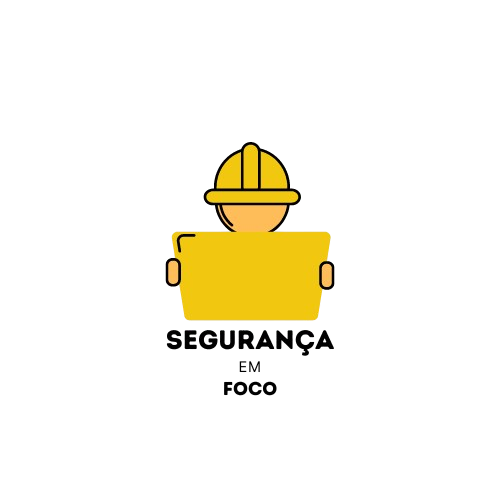

SEGURANÇA EM FOCO
|  | Bem-vindo ao nosso site dedicado à segurança do trabalho. |
EPI: Significado, Tipos, Exemplos e Importância
O que é EPI?
EPI, ou Equipamento de Proteção Individual, são dispositivos que protegem os trabalhadores contra riscos que ameaçam sua segurança e saúde. O uso de EPIs é obrigatório segundo a Norma Reguladora 6 (NR 6), e devem ser fornecidos gratuitamente pelos empregadores.